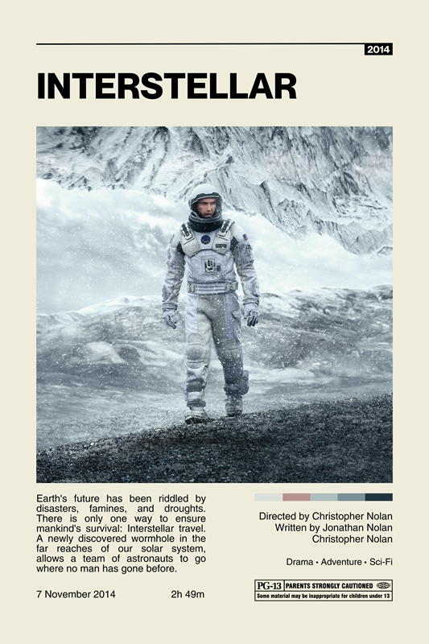

Sobre o filme
Interstellar é um filme de ficção científica realizado por Christopher Nolan. Num futuro em que a Terra está a ficar sem alimentos, um grupo de astronautas atravessa um buraco de minhoca à procura de um novo planeta para a humanidade.
O filme foi elogiado pelo rigor científico: a imagem do buraco negro Gargantua foi criada com a ajuda do físico Kip Thorne.
Porque vale a pena ver
- Efeitos visuais premiados com o Óscar
- Banda sonora de Hans Zimmer
- Uma história sobre o tempo e a família

Mais informação: Interstellar no IMDb